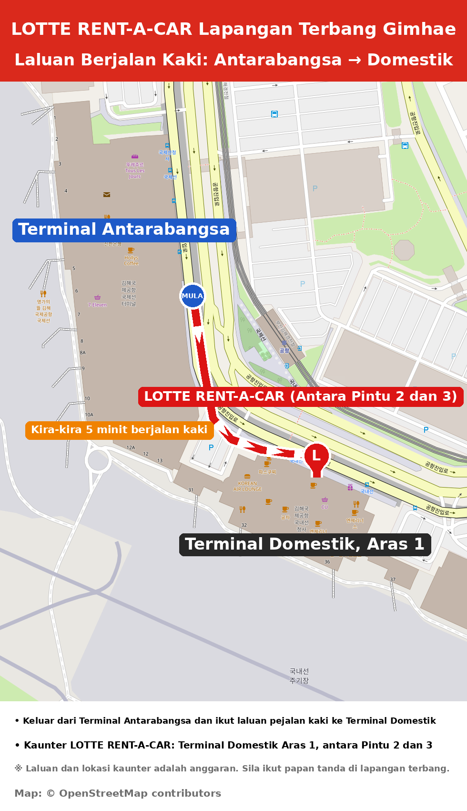

Panduan Ambil Kereta Lapangan Terbang Gimhae
Cawangan Lapangan Terbang Gimhae · Maklumat sebelum sewa

1Lokasi Ambil Kereta
Terminal Domestik, Aras 1 (Balai Ketibaan)
Kaunter kami terletak di antara Pintu 2 dan Pintu 3.
Kira-kira 5 minit berjalan kaki dari Terminal Antarabangsa.
2Dokumen yang Perlu Dibawa (Asal Sahaja)
- Pasport – untuk pengenalan diri
- Permit Memandu Antarabangsa (IDP) yang sah – sila semak tarikh luput dan kategori kenderaan:
- Kategori B: kenderaan dengan tidak lebih daripada 8 tempat duduk (tidak termasuk tempat duduk pemandu)
- Kategori D: kenderaan dengan lebih daripada 8 tempat duduk (tidak termasuk tempat duduk pemandu)
3Sebelum Tiba
Sila maklumkan nombor penerbangan ketibaan anda (cth. KE1234) dengan membalas e-mel kami.
⚡ Perkhidmatan Ambil Kereta Pantas
Hantar salinan imbasan pasport dan Permit Memandu Antarabangsa lebih awal untuk urusan ambil kereta yang cepat dan mudah!
Pertanyaan: Cawangan Lapangan Terbang Gimhae
✉️ 534046@lotte.net
💬 Sembang dengan KamiWaktu operasi: 08:00–21:00 (waktu Korea)